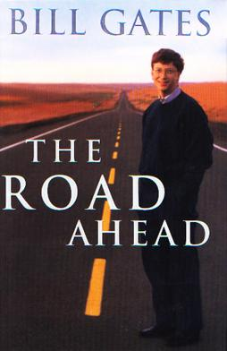

The Road Ahead is a book written by Bill Gates, co-founder and previous chairman and CEO of Microsoft software company, together with Microsoft executive Nathan Myhrvold and former Microsoft vice president and Pulitzer Prize winner Peter Rinearson. Published in November 1995, then substantially revised about a year later, The Road Ahead summarized the implications of the personal computing revolution and described a future profoundly changed by the arrival of a global information superhighway.
Gates received a $2.5-million advance for his book and money from subsidiary rights sales;[2] all his proceeds were donated to "encourage the use of technology in education administered through the National Foundation for the Improvement of Education,"[4] a foundation created by the National Education Association.[5]
Contents
1 Content differences between hardback and trade editions
2 Collaborators
3 Quotes
4 Publicity
5 Reception
6 References
7 Sources
8 Further reading
Content differences between hardback and trade editions
The hardback edition saw the Internet as one of the "important precursors of the information highway...suggestive of [its] future" (p. 89);[4] he noted that the "popularity of the Internet is the most important single development in the world of computing since the IBM PC was introduced in 1981"[4] (p. 91) but "today's Internet is not the information highway I imagine, although you can think of it as the beginning of the highway": the information highway he envisioned would be as different from the Internet as the Oregon Trail was to Interstate 84.[4] (p. 95)

After the book was written, but before it hit bookstores, Gates recognized that the Internet was gaining critical mass, and on December 7, 1995 — just weeks after the release of the book — he redirected Microsoft to become an Internet-focused company; in retrospect he had "vastly underestimated how important and how quickly the internet would come to prominence".[3] Then he and coauthor Rinearson spent several months revising the book, making it 20,000 words longer and focused on the Internet.[citation needed] The revised edition was published in October 1996 as a trade paperback,[6] with the subtitle "Completely revised and up-to-date.".[3]
Both editions came with a CD-ROM that contained the text of the book and supplemental information. The hardback was published by Viking, and the paperback by Penguin, an affiliate of Viking. Numerous publishers around the world produced translated versions of the book.
Collaborators
One of Gates' coauthors, Nathan Myhrvold, was a computer scientist and Microsoft vice president who for a time oversaw Microsoft's research efforts and later co-founded Intellectual Ventures, an intellectual property company. The other co-author, Peter Rinearson, was a Pulitzer Prize winner and entrepreneur who later founded and sold an Internet company and became a Microsoft vice president.
Quotes
"Anyone expecting an autobiography or a treatise on what it's like to have been as lucky as I have been will be disappointed."[4] (p. xiii)
"Computers are great because when you're working with them you get immediate results that let you know if your program works. It's feedback you don't get from many other things."[4] (p. 2)
"Corporations will redesign their nervous systems to rely on the networks that reach every member of the organization and beyond into the world of suppliers, consultants and customers." (1996: 153)
"We’ll find ourselves in a new world of friction, overhead capitalism, in which market information will be plentiful and transaction costs low. It will be a shopper’s heaven" (1996: 181).
"The obvious mathematical breakthrough would be development of an easy way to factor large prime numbers."[4] (p. 265)